In addition to the numerous plotting options available in the original Domino, dominoSignal has added more functionality and new methods to improve visualization and interpretation of analysis results. Here, we will go over the different plotting functions available, as well as different options that can be utilized, and options for customization.
Setup and Data Load
set.seed(42)
library(dominoSignal)In this tutorial, we will use the domino object we built on the Getting Started page. If you have not yet built a domino object, you can do so by following the instructions on that page.
Instructions to load data
# BiocFileCache helps with managing files across sessions
bfc <- BiocFileCache::BiocFileCache(ask = FALSE)
data_url <- "https://zenodo.org/records/10951634/files/pbmc_domino_built.rds"
tmp_path <- BiocFileCache::bfcrpath(bfc, data_url)
dom <- readRDS(tmp_path)Heatmaps
Correlations between receptors and transcription factors
cor_heatmap() can be used to show the correlations
calculated between receptors and transcription factors.
cor_heatmap(dom, title = "PBMC R-TF Correlations", column_names_gp = grid::gpar(fontsize = 8))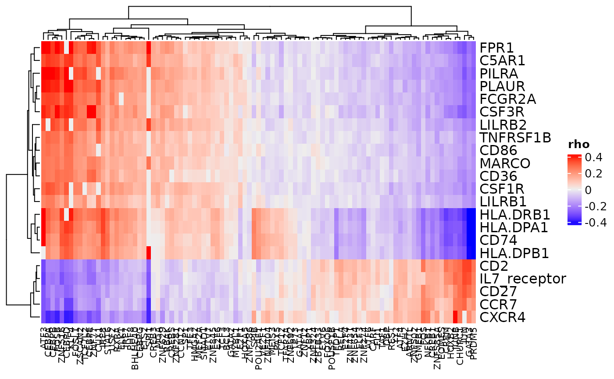
In addition to displaying the scores for the correlations, this
function can also be used to identify correlations above a certain value
(using the bool and bool_thresh arguments) or
to identify the combinations of receptors and transcription factors
(TFs) that are connected (with argument
mark_connections).
cor_heatmap(dom, bool = TRUE, bool_thresh = 0.25)
cor_heatmap(dom, bool = FALSE, mark_connections = TRUE)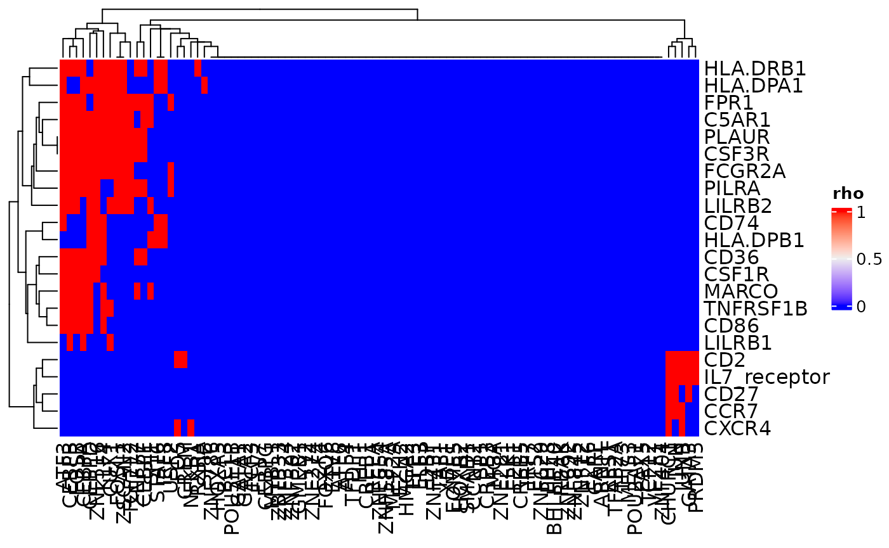
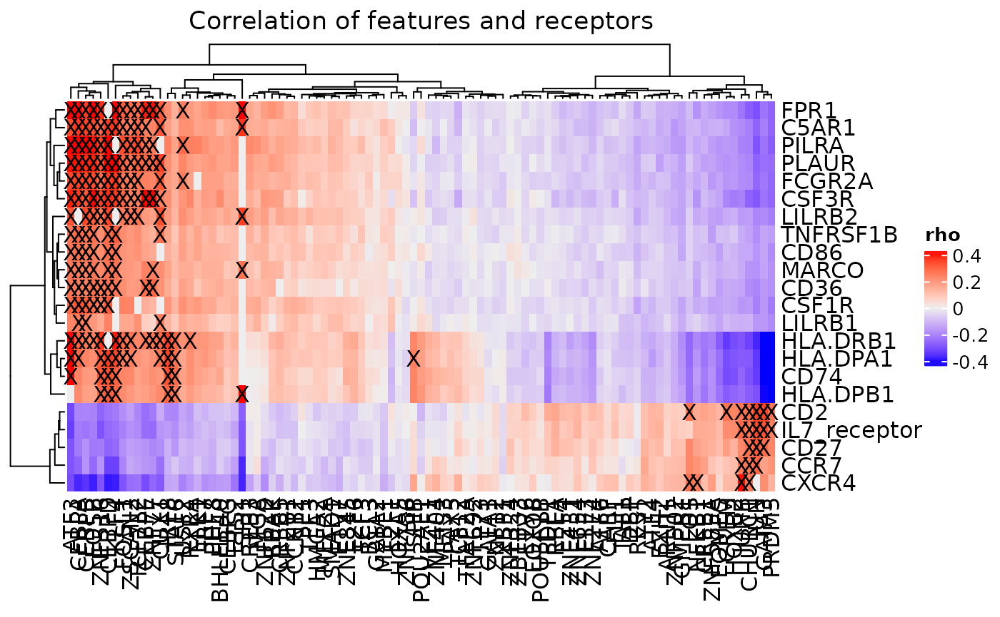
If only a subset of receptors or transcription factors are of interest, a vector of either (or both) can be passed to the function.
receptors <- c("CSF1R", "CSF3R", "CCR7", "FCER2")
tfs <- c("PAX5", "JUNB", "FOXJ3", "FOSB")
cor_heatmap(dom, feats = tfs, recs = receptors)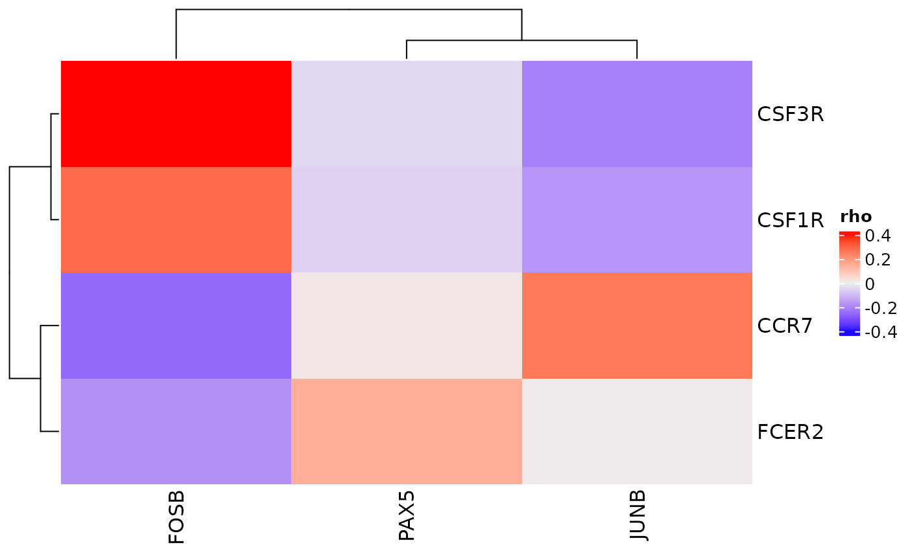
The heatmap functions in dominoSignal are based on
ComplexHeatmap::Heatmap() and will also accept additional
arguments meant for that function. For example, while an argument for
clustering rows or columns of the heatmap is not explicitly stated, they
can still be passed to ComplexHeatmap::Heatmap() through
cor_heatmap().
cor_heatmap(dom, cluster_rows = FALSE, cluster_columns = FALSE, column_title = "Heatmap Without Clustering",
column_names_gp = grid::gpar(fontsize = 4))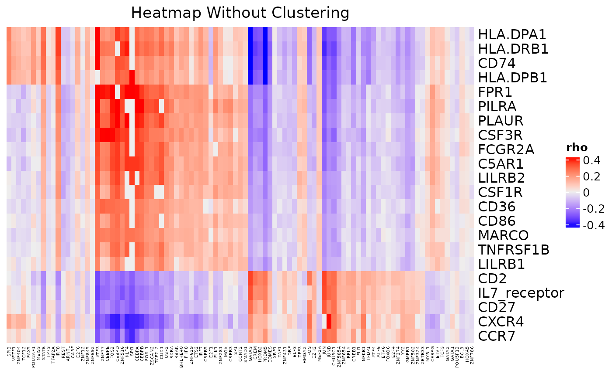
Heatmap of Transcription Factor Activation Scores
feat_heatmap() is used to show the transcription factor
activation for features in the signaling network.
feat_heatmap(dom, use_raster = FALSE, row_names_gp = grid::gpar(fontsize = 4))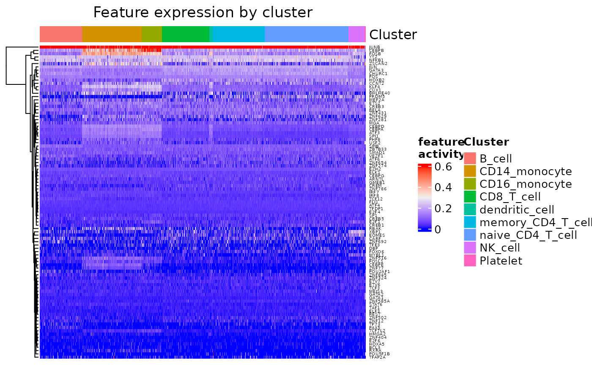
It functions similarly to cor_heatmap(), with arguments
to select a specific vector of features, to use a boolean view with a
threshold, and to pass other arguments to
ComplexHeatmap::Heatmap(). Specific to this function though
are arguments for setting the range of values to be visualized and one
to choose to normalize the scores to the max value.
feat_heatmap(dom, min_thresh = 0.1, max_thresh = 0.6, norm = TRUE, bool = FALSE,
use_raster = FALSE)
feat_heatmap(dom, bool = TRUE, use_raster = FALSE)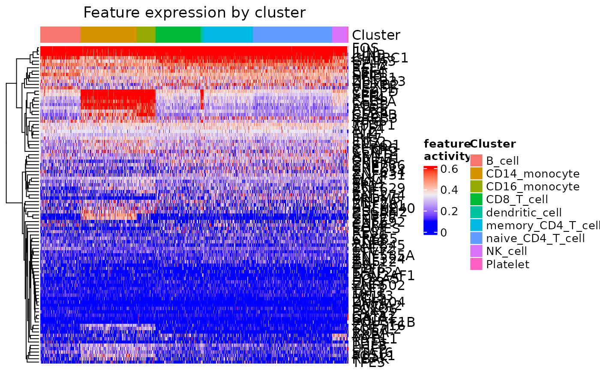
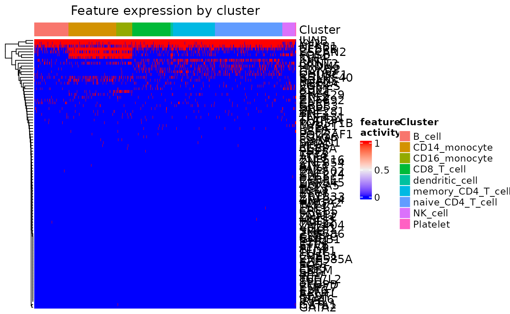
Heatmap of Incoming Signaling for a Cluster
incoming_signaling_heatmap() can be used to visualize
the cluster average expression of the ligands capable of activating the
TFs enriched in the cluster. For example, to view the incoming signaling
of the CD8 T cells:
incoming_signaling_heatmap(dom, "CD8_T_cell")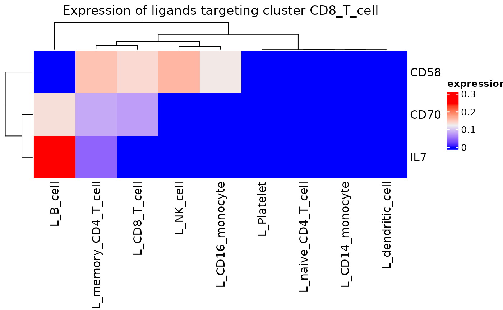
We can also select for specific clusters of interest that are signaling to the CD8 T cells. If we are only interested in viewing the monocyte signaling:
incoming_signaling_heatmap(dom, "CD8_T_cell", clusts = c("CD14_monocyte", "CD16_monocyte"))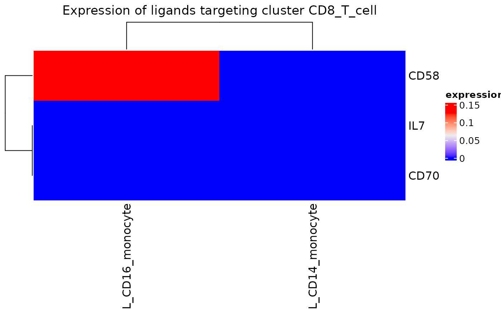
As with our other heatmap functions, options are available for a
minimum threshold, maximum threshold, whether to scale the values after
thresholding, whether to normalize the matrix, and the ability to pass
further arguments to ComplexHeatmap::Heatmap().
Heatmap of Signaling Between Clusters
signaling_heatmap() makes a heatmap showing the
signaling strength of ligands from each cluster to receptors of each
cluster based on averaged expression.
signaling_heatmap(dom)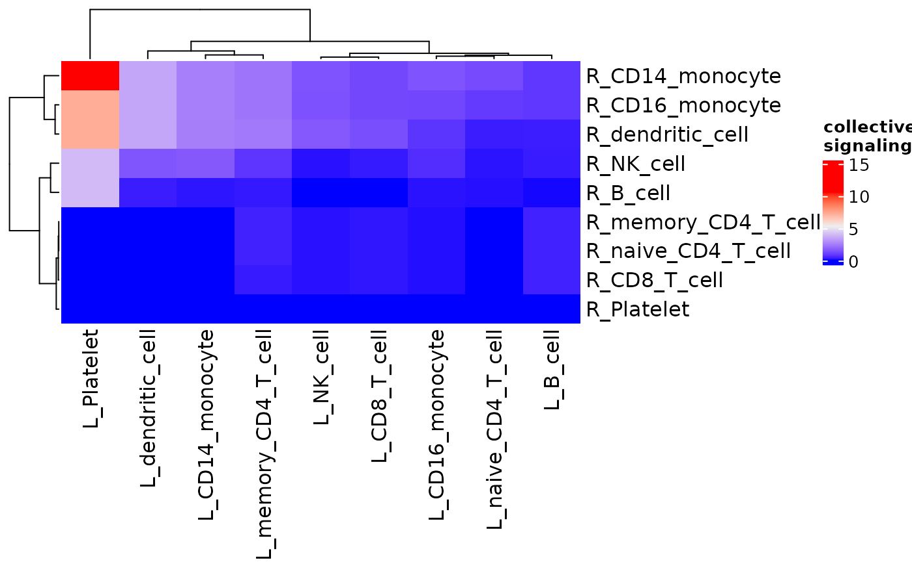
As with other functions, specific clusters can be selected, thresholds can be set, and normalization methods can be selected as well.
signaling_heatmap(dom, scale = "sqrt")
signaling_heatmap(dom, normalize = "rec_norm")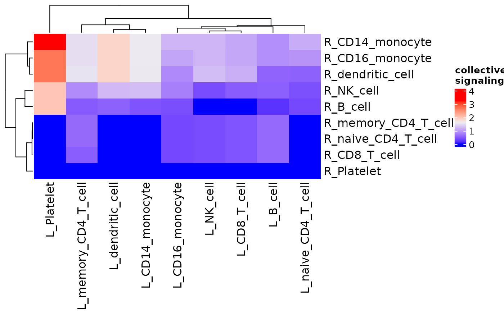
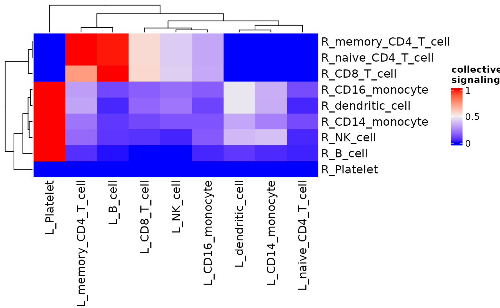
Network Plots
Network showing L - R - TF signaling between clusters
gene_network() makes a network plot to display signaling
in selected clusters such that ligands, receptors and features
associated with those clusters are displayed as nodes with edges as
linkages. To look at signaling to the CD16 Monocytes from the CD14
Monocytes:
gene_network(dom, clust = "CD16_monocyte", OutgoingSignalingClust = "CD14_monocyte")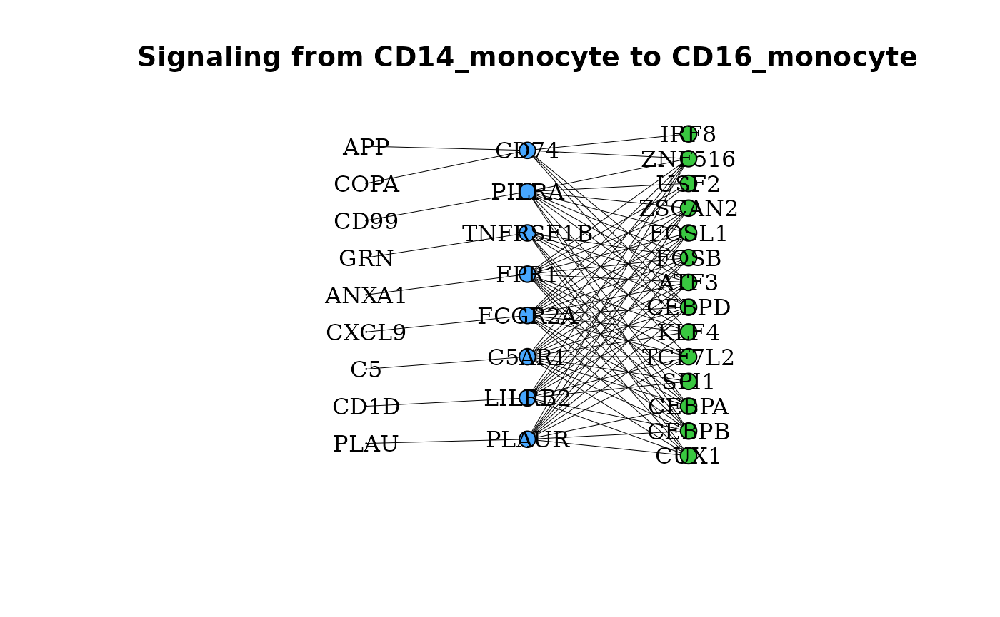
Options to modify this plot include adjusting scaling for the ligands and different layouts (some of which are more legible than others).
gene_network(dom, clust = "CD16_monocyte", OutgoingSignalingClust = "CD14_monocyte",
lig_scale = 25, layout = "sphere")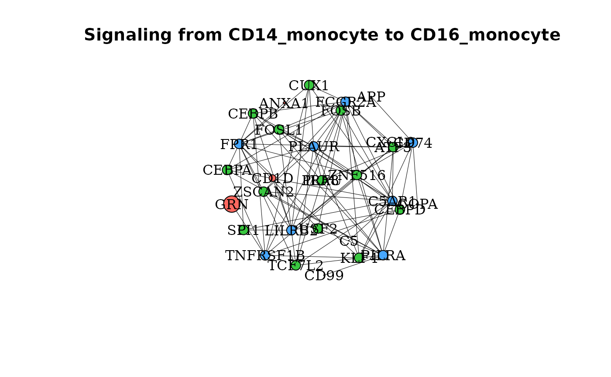
Additionally, colors can be given for select genes (for example, to highlight a specific signaling path).
gene_network(dom, clust = "CD16_monocyte", OutgoingSignalingClust = "CD14_monocyte",
cols = c(CD1D = "violet", LILRB2 = "violet", FOSB = "violet"), lig_scale = 10)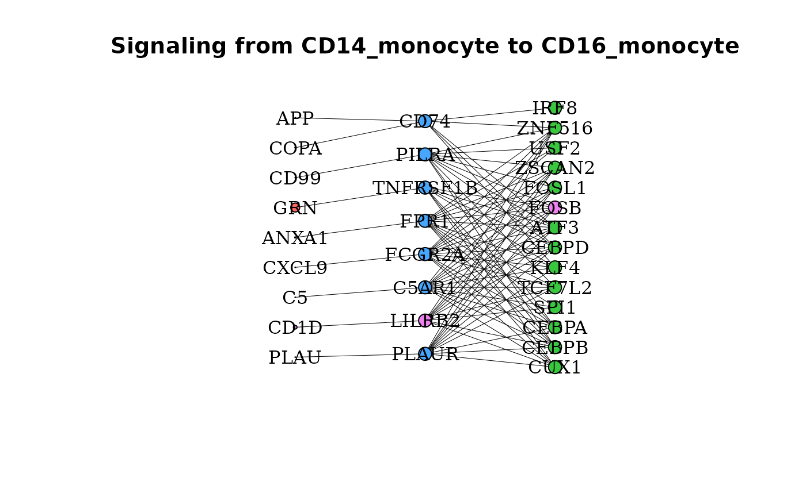
Network Showing Interaction Strength Across Data
signaling_network() can be used to create a network plot
such that nodes are clusters and the edges indicate signaling from one
cluster to another.
signaling_network(dom)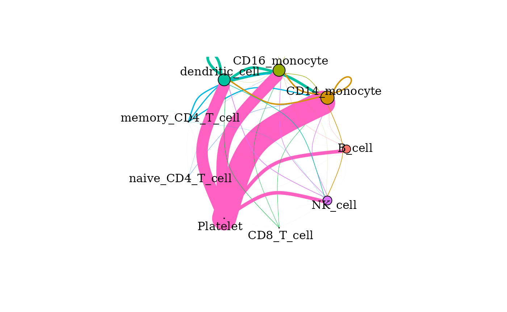
In addition to changes such as scaling, thresholds, or layouts, this plot can be modified by selecting incoming or outgoing clusters (or both!). An example to view signaling from the CD14 Monocytes to other clusters:
signaling_network(dom, showOutgoingSignalingClusts = "CD14_monocyte", scale = "none",
norm = "none", layout = "fr", scale_by = "none", edge_weight = 2, vert_scale = 10)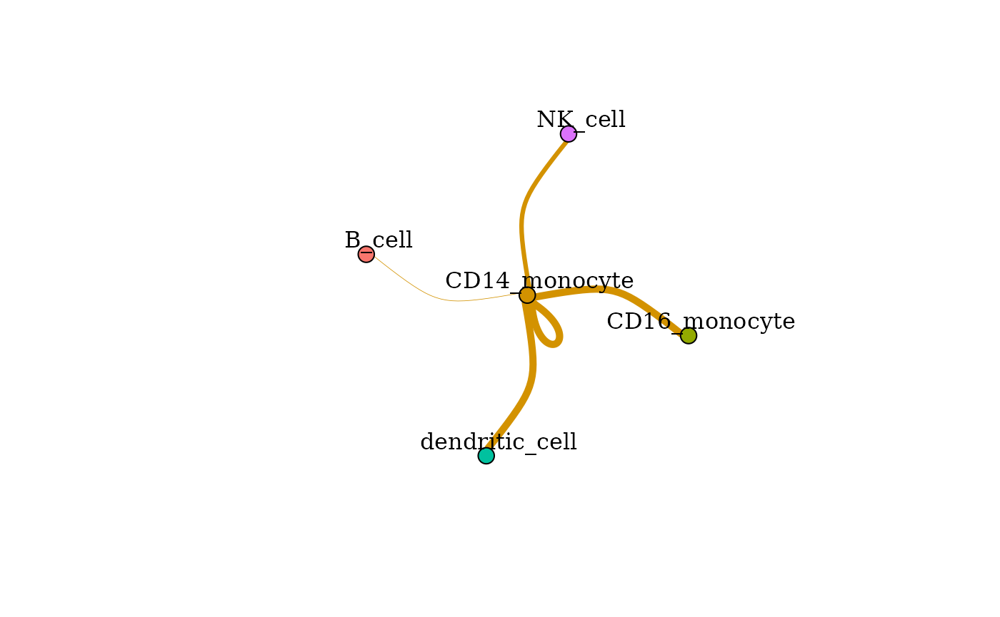
Other Types of Plots
Chord Diagrams Connecting Ligands and Receptors
A new addition to dominoSignal, circos_ligand_receptor()
creates a chord plot showing ligands that can activate a specific
receptor, displaying mean cluster expression of the ligand with the
width of the chord.
circos_ligand_receptor(dom, receptor = "CD74")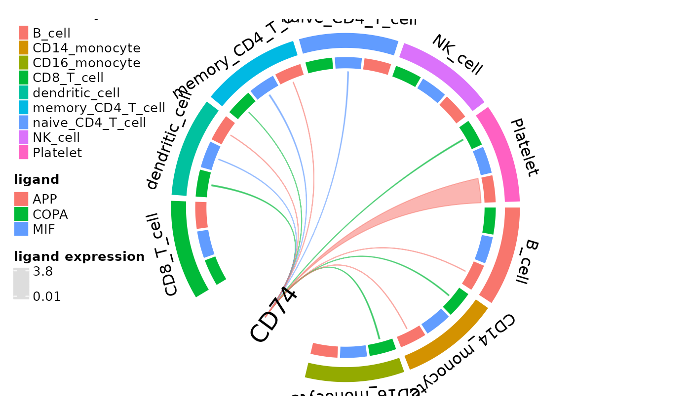
This function can be given cluster colors to match other plots you may make with your data. In addition, the plot can be adjusted by changing the threshold of ligand expression required for a linkage to be visualized or selecting clusters of interest.
cols <- c("red", "orange", "green", "blue", "pink", "purple", "slategrey", "firebrick",
"hotpink")
names(cols) <- dom_clusters(dom, labels = FALSE)
circos_ligand_receptor(dom, receptor = "CD74", cell_colors = cols)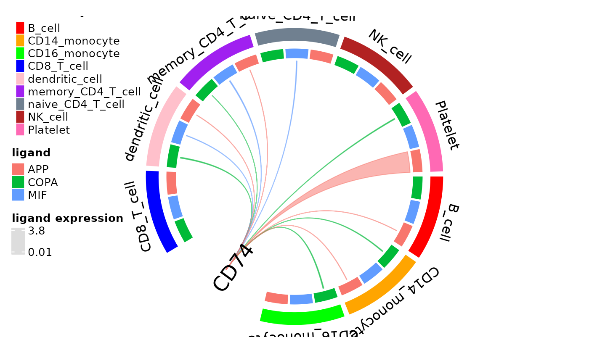
Scatter Plot to Visualize Correlation
cor_scatter() can be used to plot each cell based on
activation of the selected TF and expression of the receptor. This
produces a scatter plot as well as a line of best fit to look at
receptor - TF correlation.
cor_scatter(dom, "FOSB", "CD74")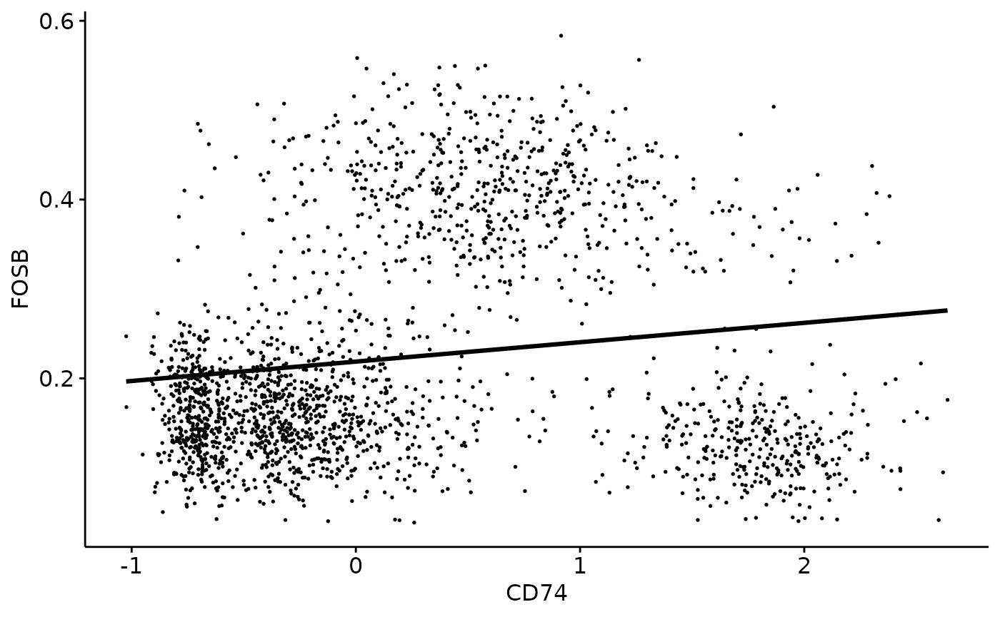
Do keep in mind that there is an argument for
remove_rec_dropout that should match the parameter that was
used when the domino object was built. In this case, we did not use that
build parameter, so we will leave the value in this argument as its
default value of FALSE.
Continued Development
Since dominoSignal is a package still being developed, there are new functions and features that will be implemented in future versions. In the meantime, to view an example analysis, see our Getting Started page, or see our domino object structure page to get familiar with the object structure. Additionally, if you find any bugs, have further questions, or want to share an idea, please let us know here.
Vignette Build Information
Date last built and session information:
Sys.Date()
#> [1] "2026-04-15"
sessionInfo()
#> R version 4.5.3 (2026-03-11)
#> Platform: x86_64-pc-linux-gnu
#> Running under: Ubuntu 24.04.4 LTS
#>
#> Matrix products: default
#> BLAS: /usr/lib/x86_64-linux-gnu/openblas-pthread/libblas.so.3
#> LAPACK: /usr/lib/x86_64-linux-gnu/openblas-pthread/libopenblasp-r0.3.26.so; LAPACK version 3.12.0
#>
#> locale:
#> [1] LC_CTYPE=C.UTF-8 LC_NUMERIC=C LC_TIME=C.UTF-8
#> [4] LC_COLLATE=C.UTF-8 LC_MONETARY=C.UTF-8 LC_MESSAGES=C.UTF-8
#> [7] LC_PAPER=C.UTF-8 LC_NAME=C LC_ADDRESS=C
#> [10] LC_TELEPHONE=C LC_MEASUREMENT=C.UTF-8 LC_IDENTIFICATION=C
#>
#> time zone: UTC
#> tzcode source: system (glibc)
#>
#> attached base packages:
#> [1] stats graphics grDevices utils datasets methods base
#>
#> other attached packages:
#> [1] dominoSignal_1.5.1
#>
#> loaded via a namespace (and not attached):
#> [1] DBI_1.3.0 httr2_1.2.2 formatR_1.14
#> [4] biomaRt_2.66.2 rlang_1.2.0 magrittr_2.0.5
#> [7] clue_0.3-68 GetoptLong_1.1.1 otel_0.2.0
#> [10] matrixStats_1.5.0 compiler_4.5.3 RSQLite_2.4.6
#> [13] mgcv_1.9-4 png_0.1-9 systemfonts_1.3.2
#> [16] vctrs_0.7.3 stringr_1.6.0 pkgconfig_2.0.3
#> [19] shape_1.4.6.1 crayon_1.5.3 fastmap_1.2.0
#> [22] backports_1.5.1 dbplyr_2.5.2 XVector_0.50.0
#> [25] labeling_0.4.3 rmarkdown_2.31 ragg_1.5.2
#> [28] purrr_1.2.2 bit_4.6.0 xfun_0.57
#> [31] cachem_1.1.0 jsonlite_2.0.0 progress_1.2.3
#> [34] blob_1.3.0 broom_1.0.12 parallel_4.5.3
#> [37] prettyunits_1.2.0 cluster_2.1.8.2 R6_2.6.1
#> [40] bslib_0.10.0 stringi_1.8.7 RColorBrewer_1.1-3
#> [43] car_3.1-5 jquerylib_0.1.4 Rcpp_1.1.1
#> [46] Seqinfo_1.0.0 iterators_1.0.14 knitr_1.51
#> [49] IRanges_2.44.0 splines_4.5.3 Matrix_1.7-4
#> [52] igraph_2.2.3 tidyselect_1.2.1 abind_1.4-8
#> [55] yaml_2.3.12 doParallel_1.0.17 codetools_0.2-20
#> [58] curl_7.0.0 lattice_0.22-9 tibble_3.3.1
#> [61] plyr_1.8.9 Biobase_2.70.0 withr_3.0.2
#> [64] KEGGREST_1.50.0 S7_0.2.1 evaluate_1.0.5
#> [67] desc_1.4.3 BiocFileCache_3.0.0 circlize_0.4.18
#> [70] Biostrings_2.78.0 pillar_1.11.1 ggpubr_0.6.3
#> [73] filelock_1.0.3 carData_3.0-6 foreach_1.5.2
#> [76] stats4_4.5.3 generics_0.1.4 S4Vectors_0.49.1-1
#> [79] hms_1.1.4 ggplot2_4.0.2 scales_1.4.0
#> [82] glue_1.8.0 tools_4.5.3 ggsignif_0.6.4
#> [85] fs_2.0.1 grid_4.5.3 tidyr_1.3.2
#> [88] AnnotationDbi_1.72.0 colorspace_2.1-2 nlme_3.1-168
#> [91] Formula_1.2-5 cli_3.6.6 rappdirs_0.3.4
#> [94] textshaping_1.0.5 ComplexHeatmap_2.26.1 dplyr_1.2.1
#> [97] gtable_0.3.6 rstatix_0.7.3 sass_0.4.10
#> [100] digest_0.6.39 BiocGenerics_0.56.0 rjson_0.2.23
#> [103] htmlwidgets_1.6.4 farver_2.1.2 memoise_2.0.1
#> [106] htmltools_0.5.9 pkgdown_2.2.0 lifecycle_1.0.5
#> [109] httr_1.4.8 GlobalOptions_0.1.4 bit64_4.6.0-1